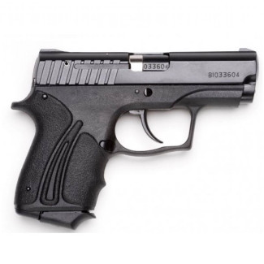

Травматическое оружие (ОООП) купить без лицензии
Пистолеты и револьверы с резиновой пулей. Без бумаг, без визитов в магазин — оформление онлайн, доставка по РФ.
Заказать в Telegram
Револьвер НАГАН травматический кал. 9 мм

РНР-У-УОС кал.9мм револьвер

Сафари 820G травматический

ПМ-Т кал.9мм травматический

Форт 12Р кал.9мм

Форт 17Р кал.9мм

Форт 10Р

Форт 9Р кал.9мм

Эрма 55P кал. 9 мм

Grand Power T910 кал.9мм

GTR-17 травматический

Гарант С27 травматический

Grand Power TQ1 UXOR

Safari GP-910 кал.9 мм

Grand Power X-СALIBUR
Что такое травматическое оружие и зачем его покупают
Под «травматикой» понимают огнестрельное оружие ограниченного поражения (ОООП), использующее патроны с резиновой пулей. Такая пуля на короткой дистанции обладает останавливающим действием, но быстро теряет скорость в мягких тканях, поэтому риск летального исхода существенно ниже, чем у боевого аналога. С 2024 года Бункер предлагает несколько десятков моделей пистолетов и револьверов под патрон 9 мм Р.А. и .45 Rubber — наиболее распространённые калибры для гражданского рынка.
Приобрести травматическое оружие можно без лицензии и разрешения. Вам не нужно посещать стационарный магазин, заполнять анкеты или предъявлять паспорт. Весь цикл — от выбора модели до доставки — проходит через Telegram-канал. После согласования заказа курьер доставляет упаковку без опознавательных знаков в любой регион РФ.
Как выбрать подходящий пистолет или револьвер
При выборе травматического оружия покупатели чаще всего оценивают пять параметров: массу, калибр, ёмкость магазина/барабана, эргономику и надёжность. Ниже — краткие рекомендации, основанные на опыте продаж в Бункере.
- Масса и габариты. Для повседневного скрытого ношения лучше подходят компактные модели весом до 700 г, например Форт 9Р или ПМ-Т. Более тяжёлые револьверы (НАГАН, Сафари 820G) дают меньшую отдачу и выше точность, но требуют привычки.
- Калибр. В нашем каталоге преобладает 9 мм Р.А. — золотая середина между мощностью и доступностью патронов. Калибр .45 Rubber обеспечивает более сильное останавливающее действие, однако патроны к нему стоят дороже.
- Боекомплект. Магазинные пистолеты вмещают от 7 до 16 патронов, револьверы — 5–7. Для самообороны желательно иметь не менее 10 выстрелов.
- Эргономика. Перед заказом уточните у менеджера возможность примерки в вашем городе или ориентируйтесь на отзывы о хвате. Модели с регулируемыми накладками на рукоять удобнее для людей с разной анатомией ладони.
- Надёжность. Большинство современных травматических пистолетов построено на базе боевых прототипов (Форт, Grand Power), что гарантирует высокий ресурс. Револьверы проще в обслуживании и менее чувствительны к загрязнению.
Таблица сравнения популярных моделей
| Модель | Калибр | Патронов | Длина ствола | Тип |
|---|---|---|---|---|
| Форт 12Р | 9 мм Р.А. | 16 | 95 мм | Пистолет |
| Grand Power T910 | 9 мм Р.А. | 15 | 105 мм | Пистолет |
| НАГАН травматический | 9 мм Р.А. | 7 | 80 мм | Револьвер |
| Сафари 820G | 9 мм Р.А. | 6 | 51 мм | Револьвер |
| Grand Power X-СALIBUR | 9 мм Р.А. | 14 | 112 мм | Пистолет |
Часто задаваемые вопросы
Можно ли купить травматическое оружие без лицензии?
Какие патроны подходят для травматических пистолетов из каталога?
Как происходит доставка?
Остались вопросы? Напишите в Telegram — менеджер поможет подобрать оружие под ваши задачи и бюджет.